双账户体系
离线账户即输即玩，微软正版账户完整 OAuth2 授权，令牌自动续期，还能导入外置登录（authlib-injector）。多个账户共存，随时切换。
经典界面之外，还有一套照游戏里做的基岩版界面：全屏、方块按钮、3D 角色、照游戏布局的「游戏」页。
账户、下载、版本管理、Mod、联机、好友 —— 两边功能一模一样。
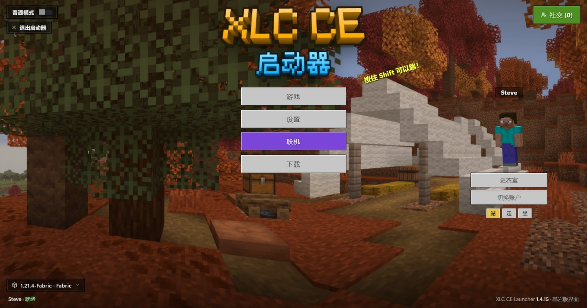
从账户到模组，从版本管理到联机与好友，该有的都有
离线账户即输即玩，微软正版账户完整 OAuth2 授权，令牌自动续期，还能导入外置登录（authlib-injector）。多个账户共存，随时切换。
客户端 / 依赖库 / 资源文件分段并行下载，内置 BMCLAPI 国内镜像与自动换源重试。单个连接卡住 15 秒自动掐断重试，不会永久卡在某个百分比。
正式版 / 快照 / 远古版本卡片式列表，点击即展开安装面板：Vanilla、Forge、Fabric、Quilt、NeoForge、OptiFine 实时探测兼容性。
对接 Modrinth 与 CurseForge 双源搜索，支持中文检索；Mod、光影、资源包、数据包、地图、整合包下载后自动归位到对应目录。
无需公网 IP，创建房间即可与好友联机。联机页常显内核版本行：装的是哪版、上游有没有新版、端口上真正在跑的是哪版，附「检查更新」与「重装内核」。
好友列表、在线状态、一键加好友、邀请一起玩。对方同意后自动建房并把房间码发过去，进房前先核对他的模组，缺什么提示装什么。
种子地图（查种子看群系结构）、一键开服（Paper / Purpur / 原版 / Fabric）、手柄控制（不碰键鼠走完全流程）、模组翻译器（JAR 汉化）。装完就在，不用另外找。
经典界面支持浅色 / 深色与自定义主题色；基岩版界面照游戏重做，全屏显示。左上角一个开关就能在两边来回切，功能完全一致。标题、按钮、存档卡这些控件的大小和位置也能自己调。
侧栏可放到窗口左 / 上 / 右 / 下四个方向；按钮顺序能拖着排，不常用的收起来，启动后进哪一页也能自己选。设置跟着配置一起导出导入。
从 1.4.5 到 1.4.15 一路重做 —— 全屏铺满、方块按钮、照游戏布局的「游戏」页，现在连实例管理都搬进来了
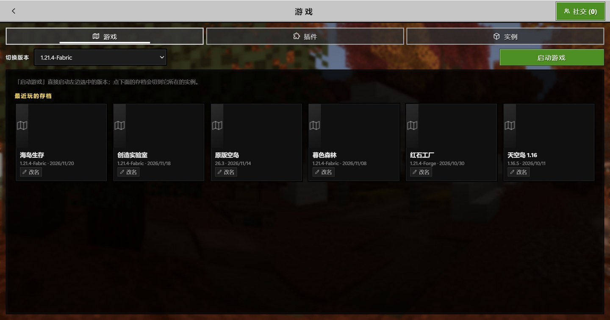
点「游戏」进去，最上面一条浅灰标题栏（返回 · 游戏 · 社交），下面三个通栏大页签 —— 材质照游戏里的石块按钮做：深灰平涂、浅灰描边，选中的只在下面压一条白线。右边绿色按钮直接启动当前版本，左边下拉换版本，换完立刻同步到实例选择。
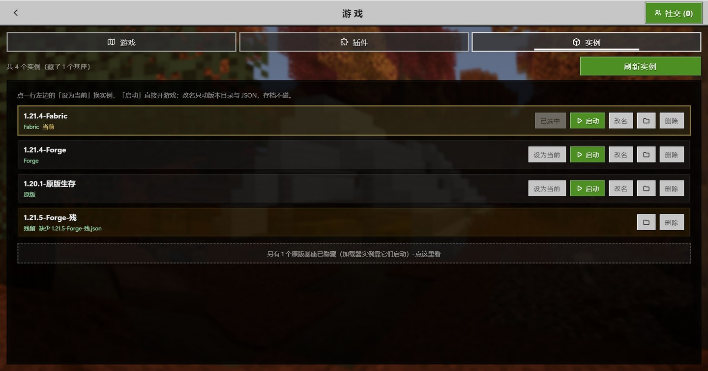
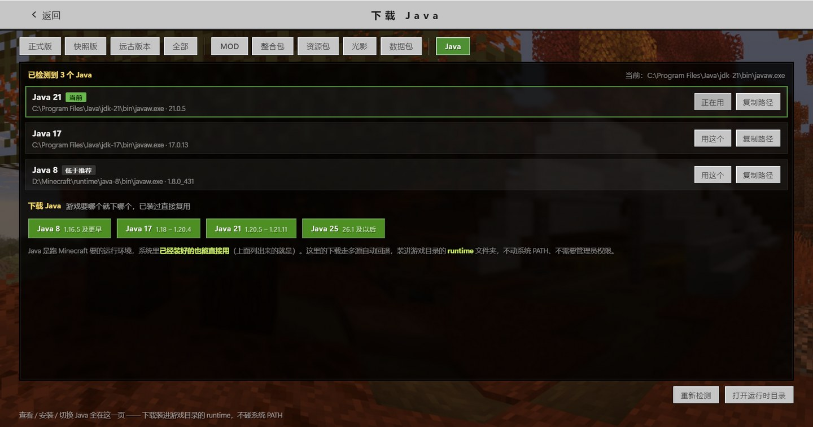
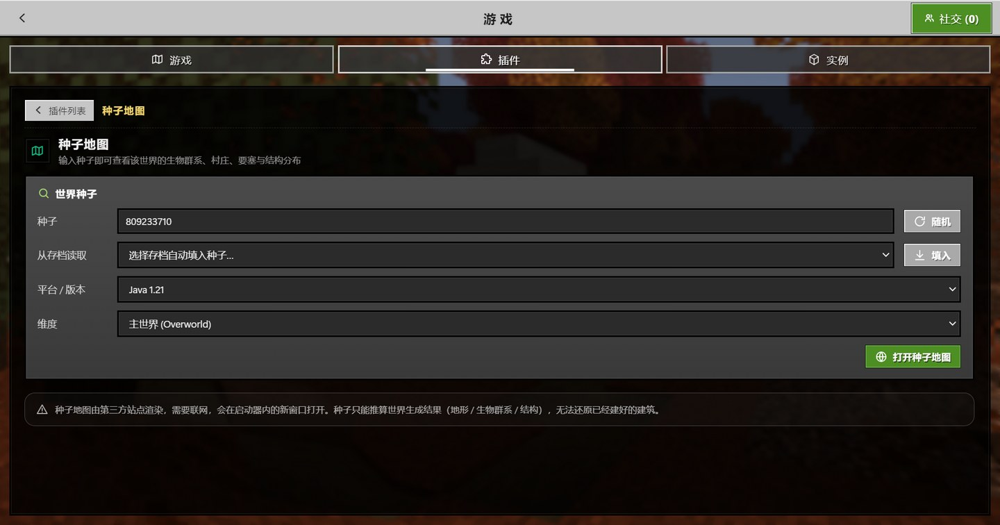
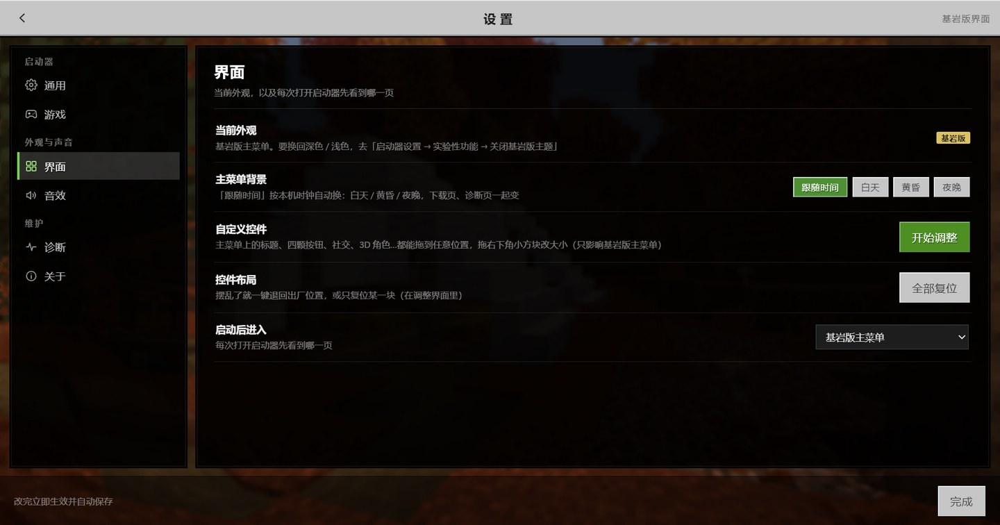
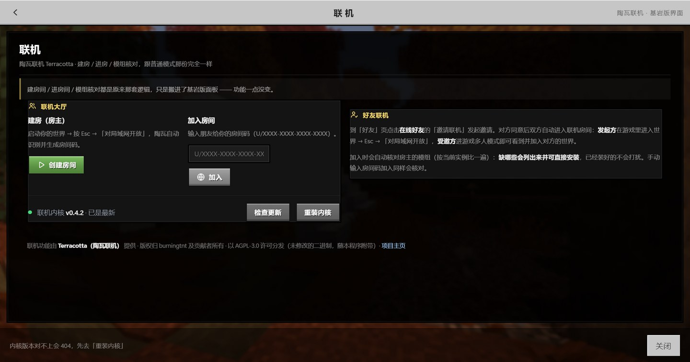
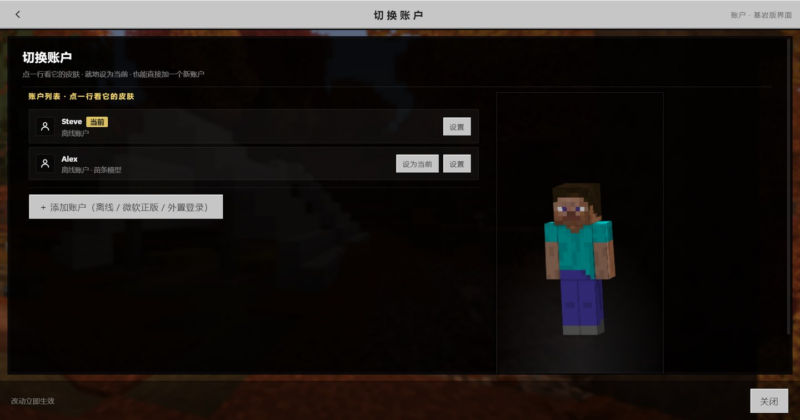
不用去别处找工具：装好启动器就已经在里面，开关一拨就能用
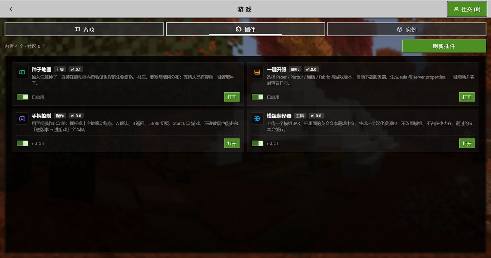
经典深色 / 浅色，或整套基岩版外观 —— 点左上角就能换
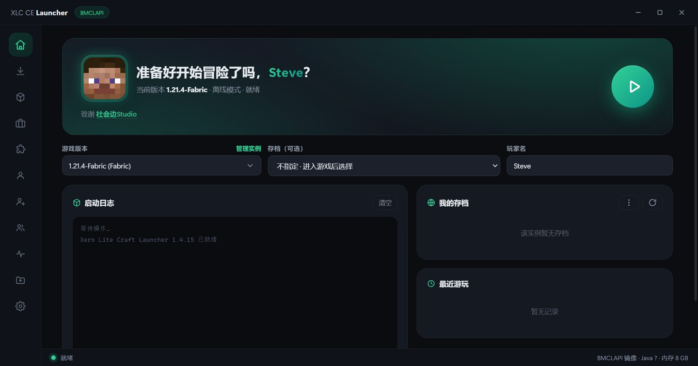
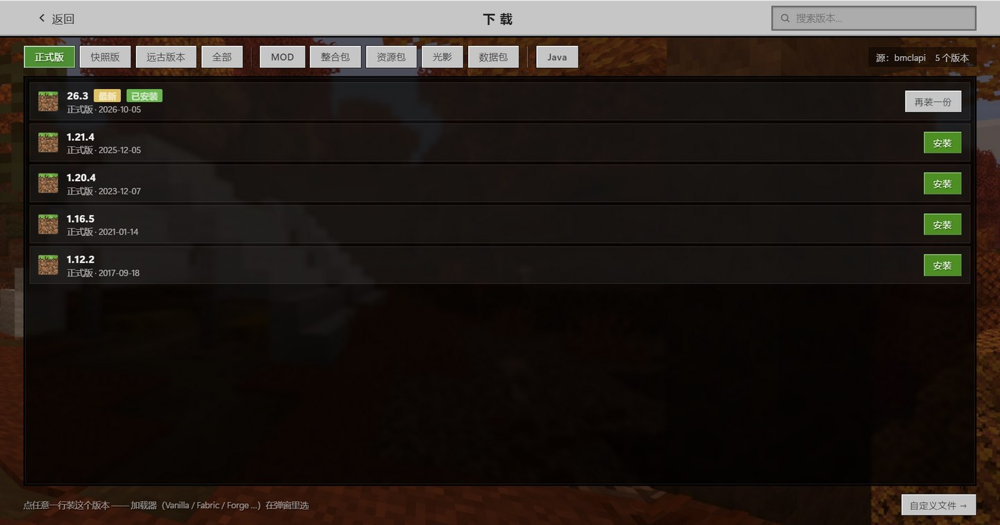
装之前、用起来最容易卡住的几件事，先在这里说清楚
不用。便携版是单文件 EXE，双击就能跑，不装任何运行库、不写注册表。第一次启动会自动建游戏目录与配置文件；在「账户」页加一个离线账户，回主页点大按钮就能进游戏。建议放在纯英文路径（例如 D:\Games\XLCCE），中文路径偶尔会让个别 Java 版本读不到文件。
启动器会自带你需要的运行时，也会扫描本机已装的 Java，按游戏版本自动匹配：≤1.16.5 用 8、1.17 用 16、1.18–1.20.4 用 17、1.20.5–1.21.11 用 21、26.1 起用 25。没有合适版本时，也可以在「设置 → 游戏」里手动指定 java.exe 路径；基岩版下载页里还有独立的 Java 一页，看已装的、缺哪个下一个，全在里面完成。
都支持。微软账户走完整的 OAuth2 授权链路，登录后可正常进入正版服务器，令牌会自动续期不用反复登。外置登录（authlib-injector，各类皮肤站 / 私服）也能导入，填服务器地址即可。离线账户和正版账户可以同时存在，随时切换。
能，整个目录拷走就能用。默认开启版本隔离：每个实例有自己的 mods、config、存档目录，装不同整合包不会互相打架。想共用 mods 可以在设置里关掉隔离，改成全局目录。
在「设置 → 实验性功能」里打开基岩版主题。开启后窗口会自动全屏，顶上那条标题栏（关闭 / 最小化 / 左上角 logo）整条收起 —— 想退出启动器，点左上角「普通模式」下面那颗「退出启动器」，会先弹确认框告诉你游戏还在不在跑；想回到经典深色界面，点左上角的「普通模式」开关即可，窗口会同时退出全屏。
不是。插件扩展的是启动器本身（种子地图、开服、手柄、翻译），Mod 是给游戏用的，两者分开装。四个内置插件装好启动器就在，开关一拨立即生效；社区插件是 .zip 包，从「插件」页导入，跑在独立面板里，权限（读文件 / 网络 / 通知）会先问你要一遍。基岩版界面里点「插件 → 打开」，面板就地铺开，不会把你甩回经典界面。
九成是端口上跑着别的启动器留下的旧内核。打开「联机」，看底部那条内核版本行：如果「端口上在跑的」跟「当前版本」对不上，点「重装内核」，它会重下、覆盖再自动拉起。加入失败时提示里也会直接告诉你该做什么：404 去重装内核，400 是房间码格式或校验位不对。房间码少打 U/、少个连字符、用了全角符号都能自动纠正。
先去「诊断」页跑一遍实例文件完整性体检，缺的、被截断的 jar 会补上；再确认模组和游戏版本、加载器对得上（Fabric 模组不能丢进 Forge 实例）。如果是刚装完加载器就闪退，多半是 classpath 上重复的库打架，这类问题 1.2.1 起已经按官方规则合并处理。还不行就把「启动日志」最后几十行发出来 —— 报错原因通常写得很直白。
不会真的卡死：单个连接 15 秒没动静会自动掐断重试，并切换备用源（内置 BMCLAPI 国内镜像）。整轮资源下载失败也会自动补一轮。如果某个版本反复失败，去「设置 → 游戏」把下载源换成官方源或镜像源再试一次。
默认都在启动器自己的目录下：saves（存档）、logs（日志）、lmc.config.json（配置）。换机器时把整个目录拷过去就行；也可以只拷这三个，「设置 → 关于」旁边的导入导出能把配置、侧栏顺序与插件开关一起带走。
那是加载器实例必须继承的「原版基座」—— Fabric / Forge 生成的版本文件只写自己的加载器和启动类，游戏本体、原版库、资源索引都靠一句 inheritsFrom 指回那份纯原版去取，删了加载器实例就启动不了。它没有单独启动的意义，所以 1.4.15 起默认从所有「选版本」的地方隐藏（主页下拉、切换版本、游戏页、默认启动实例、资源与光影的目标版本都不列）。真要处理它，去「实例管理」页底部点开「已隐藏 N 个原版基座」，删的时候会提示连带影响并二次确认。
下载便携版，双击即用，几十秒后进入你的世界。